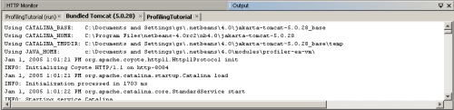
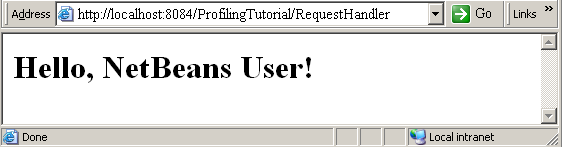
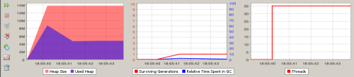
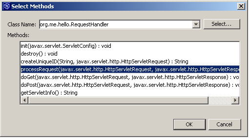
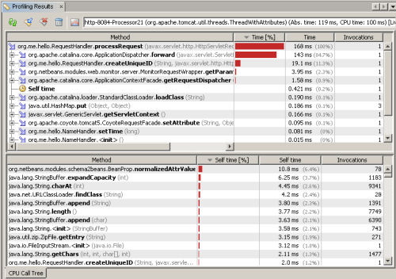

Учебный курс по средству профилирования в среде IDE NetBeans 4.0
Представлено Греггом Спораром (Gregg Sporar) в рамках конкурса
Выигрывай с NetBeansЭта статья относится к средству профилирования NetBeans Milestone 5.
Средство профилирования NetBeans представляет собой мощный инструмент, предоставляющий важные данные о поведении приложения во время выполнения. Оказывая лишь небольшое влияние на эффективность работы системы, средство профилирования NetBeans отслеживает производительность ЦП и использование памяти. В этом учебном курсе мы продемонстрируем способы использования средства профилирования в NetBeans 4.0, позволяющие:
Отрывки из этого учебного курса изначально появились в статье о JFluid, основной технологии средства профилирования NetBeans, в журнале Java Developer's Journal в июне 2004 г. (http://sys-con.com/story/?storyid=45081&DE=1). Все переиздания опубликованы с разрешения издателя Java Developer's Journal.
На выполнение данного учебного курса потребуется около часа.
Настройка среды
Установка средства профилирования
Средство профилирования NetBeans доступно для отдельной загрузки в бета-версии. Для выполнения данного учебного курса необходимо установить последнюю версию средства профилирования NetBeans. Не забывайте следовать указаниям по загрузке и установке средства профилирования NetBeans.
Настройка Tomcat
Профилирование веб-приложения требует выполнения веб-сервера с пакетом JDK, включающим в себя средство профилирования NetBeans. Так что для использования средства профилирования на сервере Tomcat, связанном с NetBeans, требуется произвести небольшое изменение в принципе запуска Tomcat. Самым простым способом будет изменить сценарий запуска Tomcat. Файл сценария называется catalina.bat (в системе Windows) или catalina.sh (в системе Unix). Сценарии размешены в папке bin сервера Tomcat; типичное местоположение в системе Windows:
C:\Program Files\netbeans-4.0\nb4.0\jakarta-tomcat-5.0.28\bin\catalina.bat
А путь к файлу в Unix должен выглядеть примерно так:
/export/home/gs/tools/netbeans/40/nb4.0/jakarta-tomcat-5.0.28/bin/catalina.sh
- Сохраните резервную копию сценария.
- Добавьте прямо под блоком комментариев, т.е. в верхней части файла строку, которая устанавливает JAVA_HOME в папке, содержащей пакет JDK со средством профилирования NetBeans. Выберите в NetBeans команду "Средство профилирования" > "Справка" > "О средстве профилирования", чтобы отобралось имя папки. Пример значения в Windows:
set JAVA_HOME=c:\Documents and Settings\gs\.netbeans\4.0\modules\profiler-ea-vm\
Пример значения в Unix:
JAVA_HOME="/home/gs/.netbeans/4.0/modules/profiler-ea-vm/"
Получение необходимых исходных файлов
В данном учебном курсе используется веб-приложение на основе проекта HelloWeb, созданного в рамках Руководство по началу работы с веб-приложениями в среде IDE NetBeans 4.0. В данном учебном курсе также используется сервлет, обрабатывающий входящие запросы. Создаются компоненты Java, которые затем отправляются в JSP, где создается ответ. Сервлет нарочно написан очень простым кодом, чтобы подчеркнуть функции средства профилирования NetBeans.
Все файлы приложения можно загрузить в архиве ProfilingTutorial.zip.
- Создайте в файловой системе папку для распакованных файлов приложения. С нынешнего момента папка будет называться $UNZIPHOME.
- Щелкните здесь, чтобы загрузить файл ProfilingTutorial.zip.
- Распакуйте архив ProfilingTutorial.zip в папку $UNZIPHOME.
Теперь в папке $UNZIPHOME содержатся папки web и src. Папка web содержит два файла JSP и дескрипторы развертывания. Папка src содержит исходные файлы для сервлета и классов компонента Java.
Создание проекта
Создание веб-проекта на основе предоставленных исходных файлов
- Выберите "Файл > Новый проект" (CTRL+SHIFT+N). В области "Категории" выберите "Web". Выберите в меню "Проекты" пункт "Веб-проект с существующими исходными файлами". Нажмите кнопку "Далее".
- Нажмите в поле "Местоположение" кнопку "Обзор", чтобы выбрать корневой каталог документации веб-приложения. Корневой каталог документа — $UNZIPHOME, папка, в которую был распакован архив ProfilingTutorial.zip.
- В качестве имени проекта введите текст ProfilingTutorial. Нажмите кнопку "Далее".
- Нажмите кнопку "Готово". В среде IDE создается папка проекта $UNZIPHOME/nbproject и файл $UNZIPHOME/build.xml. Проект ProfilingTutorial откроется в среде IDE. Его логическую структуру можно просмотреть в окне "Проекты", а файловую структуру — в окне "Файлы".
- Последний шаг требуется только если платформа NetBeans настроена для пакета JDK v5 как платформы Java по умолчанию.
- Текущее средство профилирования поддерживает файлы .class, созданные пакетом JDK v1.4.2, так что если вы не установили версию v1.4.2 пакета JDK и не настроили ее в качестве платформы NetBeans Java, будет необходимо это сделать. Обратите внимание, что в бета-версии средство профилирования NetBeans устанавливает пакет JDK на основе версии v1.4.2 - мы определили его как JAVA_HOME в действии Настройка Tomcat. Для получения дополнительных сведений просмотрите интерактивную справку по средству профилирования.
- Щелкните правой кнопкой мыши в окне "Проекты" запись ProfilingTutorial и выберите пункт "Свойства". Выберите платформу Java, для которой используется пакет v.1.4.2 JDK, и нажмите кнопку "ОК".
- Сохраните в папке bin Tomcat резервную копию файла catalina.50.bat (в Windows) или catalina.50.sh (в Unix).
- Внесите изменения в файл catalina.50.bat (в Windows) или catalina.50.sh (в Unix), которые мы выполнили в действии Настройка Tomcat.
Выполнение проекта
- Щелкните в окне "Проекты" правой кнопкой мыши запись ProfilingTutorial и выберите команду "Очистить и построить проект". Снова щелкните запись ProfilingTutorial правой кнопкой мыши и выберите пункт "Выполнить проект". В результате в среде IDE будет построен проект, запустите Tomcat и откройте страницу index.jsp в окне обозревателя.
- Убедитесь, что Tomcat запустился, открыв вкладку "Встроенный Tomcat" в окне вывода среды IDE. Прокрутите окно вывода Tomcat вверх, чтобы убедиться, что сервер Tomcat запустился при помощи JVM средства профилирования NetBeans. Проверьте строку, начинающуюся с текста Использование JAVA_HOME; домашний каталог Java должен быть папкой, содержащей JVM средства профилирования NetBeans. Если сервер Tomcat не запустился или каталог JAVA_HOME не содержит JVM средства профилирования NetBeans, убедитесь в соблюдении указаний действия Настройка Tomcat. Образец выходного сообщения в Windows представлен на рисунке ниже.

- В окне обозревателя должна открыться и отображаться страница http://localhost:8084/ProfilingTutorial/. Убедитесь, что веб-приложение работает, введя в поле имени текст NetBeans User и нажав кнопку "ОК". Результат должен быть похож на изображенный ниже. 
Отслеживание поведения во время выполнения
Подключение к выполняемому приложению
Теперь, когда мы убедились, что сервер Tomcat использует JVM, включенную в средство профилирования NetBeans, можно подключить к JVM средства профилирования среды IDE и отслеживать ее поведение во время выполнения.
- Выберите элементы "Профиль" > "Подключить средство профилирования". Появится диалоговое окно "Указать параметры подключения".
- Для параметра "Подключить к:" выберите значение "Сервер J2EE Web/App"
- Для параметра "Выполнение на:" установите флажок "Этот компьютер"
- Для параметра "Настройки подключения" выберите значение "Динамическое подключение" и установите флажок "Выбрать выполняемую виртуальную машину". Выберите запись Tomcat (обычно org.apache.catalina.startup.Bootstrap start) в списке виртуальных машин.
- В поле "Рабочий каталог" введите полное уточненное имя каталога bin на сервере Tomcat. Например, в системе Windows типичное значение может выглядеть следующим образом:
C:\Program Files\netbeans-4.0\nb4.0\jakarta-tomcat-5.0.28\bin
В системе Unix значение будет выглядеть примерно так:
/export/home/gs/tools/netbeans/40/nb4.0/jakarta-tomcat-5.0.28/bin
- Нажмите кнопку "ОК". Появится диалоговое окно "Подключение и профилирование".
- Нажмите кнопку "Отслеживание приложения". Убедитесь, что параметр "Разрешить мониторинг подпроцессов" отключен.
- Нажмите кнопку "Подключить".
Средство профилирования NetBeans отображает в окне вывода три графика, примеры которых приведены ниже.

График слева проще всего расшифровать. Красный цвет обозначает размещенный размер кучи JVM, который обновляется каждую секунду. Фиолетовым цветом обозначен фактически используемый объем кучи. В примере, приведенном выше, размер размещенной кучи на момент последнего обновления был почти 14 Мб. Из 14 Мб фактически для хранения объектов Java использовалось 4 Мб.
График справа также прост для понимания. На нем изображено число активных потоков в JVM, обновляемых один раз в секунду.
График в центре представляет наибольший интерес. На нем изображены две важные статистики кучи.
- Голубая линия обозначает процент времени выполнения, затраченного JVM на сборку мусора, который отображается на графике относительно оси Y справа. Время, затраченное JVM на сборку мусора, — это время, в течение которого приложение не может быть запущено. Поэтому если голубая линия показывает высокий процент, возможно, требуется настроить в JVM больший размер кучи (просмотрите документацию по параметру -Xmx) или сменить алгоритм сборки мусора.
-
Красная линия — это сохранившиеся поколения, которые отображены на графике относительно оси Y слева. Число сохранившихся поколений - это число различных поколений объектов Java в куче JVM, где под "поколением" подразумевается число коллекций мусора, сохранившихся в объекте. Если число сохранившихся поколений мало, это означает, что большинство объектов кучи функционировали примерно одно и то же количество времени. Однако если число сохранившихся поколений с течением времени существенно возрастает, это означает, что приложение размещает новые объекты, сохраняя связи со многими старыми объектами, которые уже были размещены. Если эти старые объекты на самом деле больше не требуются, в приложении происходит утечка памяти.
Нажатие на кнопку

— в среде IDE будут выведены более крупные версии этих трех графиков в главном окне вывода.
Определение времени ЦП, используемого методом
Переключение в режим анализа производительности
Средство профилирования подключается к JVM на сервере Tomcat, однако только отслеживает статистику на высоком уровне. Чтобы получить подробные сведения о производительности определенного метода (или методов) приложения, необходимо изменить параметры средства профилирования.
- Нажмите кнопку
 или выберите элементы "Профиль" > "Изменить профилирование".
или выберите элементы "Профиль" > "Изменить профилирование".
- Нажмите кнопку "Проанализировать производительность"
- Выберите переключатель "Часть приложения". Затем нажмите кнопку "Выбрать" рядом с переключателем "Часть приложения".
- Нажмите кнопку "Добавить".
- Нажмите кнопку "Выбрать". В окне средства профилирования отобразится дерево выбора класса.
- Разверните запись ProfilingTutorial, щелкнув значок плюса.
- Разверните запись "Исходные пакеты", щелкнув значок плюса.
- Разверните запись org.me.hello.
- Разверните запись RequestHandler.java.
- Щелкните запись RequestHandler и нажмите кнопку "ОК".
- Методы в классе RequestHandler теперь отображаются в диалоговом окне "Выбрать методы", как показано на рисунке ниже. Щелкните метод processRequest и нажмите кнопку "ОК".

- Выберите метод processRequest, щелкнув его в списке "Корневые методы", и нажмите кнопку "ОК". Сейчас мы выбрали метод processRequest в качестве корневого метода для анализа производительности. Это означает, что будет отслеживаться метод processRequest все вызываемые им методы, а также, все методы, вызываемые, в свою очередь, вызванными методами и т.д. Начиная с метода processRequest, средство профилирования анализирует график вызовов метода, чтобы определить методы, для которых требуется профилирование. Профилируются только эти методы — остальная часть приложения продолжает работать без потери производительности из-за профилирования.
- Нажмите в диалоговом окне "Изменить профилирование" кнопку "ОК".
Выполнение профилированного метода
Теперь, когда мы выбрали метод processRequest в качестве корневого метода, необходимо воспользоваться частью веб-приложения, которая выполняет этот корневой метод. Это просто выполнить, поскольку метод processRequest обрабатывает все запросы со страницы index.jsp.
- Нажмите в веб-обозревателе кнопку "Назад", чтобы вернуться на страницу http://localhost:8084/ProfilingTutorial/.
- Нажмите кнопку "ОК", чтобы повторно отправить "NetBeans User" в качестве имени пользователя. Отклик потребует некоторого времени, поскольку средство профилирования отслеживает производительность метода processRequest.
- После того как строка Hello, NetBeans User! появится в окне обозревателя, нажмите кнопку или выберите команды "Профиль" > "Получить текущие результаты".
Интерпретация графика анализа производительности
Средство профилирования выводит последние результаты анализа производительности, как показано на рисунке ниже.

В верхнем окне отображается полный график вызова методов начиная с корневого. Метод processRequest выполнялся 168 мс. Обратите внимание, что на выполнение указаний метода processRequest тратится очень мало времени - в шестой строке отображается "собственное время" дляprocessRequest в 0,421 мс. Большая часть времени была потрачена на выполнение методов, вызываемых методом processRequest. В частности, метод forward занял 84,7% времени выполнения. Это не удивительно, учитывая количество задач, которые должен выполнить метод forward.
Польза средства профилирования NetBeans в том, что оно помогает распознать критические элементы кода, которые не предполагались или препятствуют нормальному масштабированию приложения. Обратите внимание, что метод createUniqueID занял 11,3% времени выполнения. Можно щелкнуть значок плюса рядом с записьюcreateUniqueID, чтобы детально изучить, на что было потрачено время. Если просмотреть код относительно метода createUniqueID, обнаружится, что для него используется ужасно неэффективный алгоритм, который необходимо оптимизировать.
Окно ниже — более подробное описание, в нем отображается "собственное время" каждого метода на графике вызовов.
Мониторинг создания объектов
Переключение в режим анализа памяти
Средство профилирования может выполнять подробный анализ (также называемый измерением) производительности ЦП или использования памяти, но не того и другого одновременно. Для получения подробных сведений о расположении и сборе мусора объектов а куче JVM необходимо изменить параметры средства профилирования.
- Нажмите кнопку или выберите элементы "Профиль" > "Изменить профилирование".
- Нажмите кнопку "Анализ использования памяти".
- Установите флажок "Записать создание объекта и сбор мусора".
- Нажмите кнопку "ОК".
Выполнение профилированного приложения
После выбора анализа использования памяти необходимо воспользоваться веб-приложением, чтобы определить эффективность использования им памяти.
- Нажмите в веб-обозревателе кнопку "Назад", чтобы вернуться на страницу http://localhost:8084/ProfilingTutorial/.
- Нажмите кнопку "ОК", чтобы повторно отправить "NetBeans User" в качестве имени пользователя.
- Как только строка Hello, NetBeans User! появится в обозревателе, нажмите кнопку "Назад", чтобы вернуться на предыдущую страницу.
- Повторите шаги 2 и 3 девять раз. Многократная отправка одного и того же имени пользователя необходима в учебных целях.
- Нажмите кнопку или выберите команды "Профиль" > "Получить текущие результаты".
- В окне средства профилирования отобразятся результаты последнего анализа использования памяти в виде таблицы. Щелкните столбец "Имя класса", чтобы отсортировать записи по имени класса.
- Прокрутите таблицу вниз до записи класса org.me.hello.NameHandler.
Интерпретация графика анализа памяти
Иллюстрация, расположенная ниже, — это статистика для класса org.me.hello.NameHandler.

В столбцах отображаются сведения о расположении объектов и использовании памяти.
- Столбец "Всего выделено объектов" (крайний справа) легче всего расшифровать. Это общее число созданных объектов этого класса. Для класса NameHandler число объектов составляет 10 — это число раз, которое была нажата кнопка "ОК" в форме веб-приложения.
- В столбце "Размещенные объекты" отображается число объектов, отслеживаемых средством профилирования в настоящий момент. В этом примере из 10 созданных экземпляров NameHandler отслеживается только один. По умолчанию это число составляет примерно 10 % от общего числа размещенных объектов (поэтому числа, которые вы видите на снимке экрана, могут немного отличаться от фактических). Отслеживая только подмножество созданных объектов средство профилирования существенным образом снижает свое влияние на производительность JVM, что позволяет приложению работать практически на полной скорости.
- "Живые объекты" — это число размещенных объектов, которые все еще находятся в куче JVM и, следовательно, используют память.
- В двух столбцах "Выделенные байты" отображается объем памяти кучи, использующийся живыми объектами. В одном столбце отображается график, а во втором — описание.
- Среднее значение возраста вычисляется при помощи живых объектов. Возраст объекта — это число коллекций мусора, которые были собраны за время существования этого объекта. Суммарное значение возраста, которое делится на число живых объектов, — это среднее значение возраста.
- Значение "Поколения" вычисляется с использованием живых объектов. Как уже говорилось, возраст объекта — это число коллекций мусора, которые были собраны за время существования этого объекта. Значение поколения — это число различных возрастов живых объектов.
Эти значения помогут вам отследить утечку памяти. Значение "Поколения" равно значению "Сохранившиеся поколения", описанному в разделе Интерпретация графиков мониторинга, однако ограничено объектами одного класса. Более детальный просмотр результатов мониторинга может помочь вам найти определенные объекты, которые бесполезно используют пространство кучи.
В данном примере нет необходимости проводить анализ поколений, чтобы увидеть, что проблемным классом является класс NameHandler. Значение "Всего выделено объектов" составляет 10. Код сервлета предназначался для повторного использования объектов NameHandler при вводе одного и того же имени пользователя. Ясно, что это не происходит. Ошибка кроется в методе processRequest: ключ, использовавшийся для проверки записи в Map является не тем же ключом, которые используется для хранения записи. Результатом стала типичная утечка памяти приложения на Java: объект размещен в Map и забыт.
Другим средством для анализа поведения приложения является анализ расположения объектов определенного класса в коде. Это может помочь в предположениях о причинах нахождения объекта в куче. Средство профилирования NetBeans отобразит трассировки стеков для всех классов при щелчке записи класса в таблице правой кнопкой мыши и выборе команды "Показать стек операций выделения памяти".
Для завершения сеанса профилирования выберите команды "Профиль" > "Отсоединить".
Дальнейшее изучение
В этом учебном курсе были лишь слегка затронуты некоторые из мощнейших функций средства профилирования. Для получения дополнительных сведений просмотрите справку по средству профилирования NetBeans.
- При профилировании использования ЦП можно определить фильтр классов для предотвращения профилирования методов вне приложения (например, все методы java.*). Это позволит приложению работать практически без потери мощности.
- Профилирование использования ЦП может повлиять на оптимизацию байткода JVM, что может вызвать несоответствие данных из отчета о работе ЦП фактической производительности. Тем не менее, существуют методы минимизации этого эффекта средства профилирования.
- Функция анализа использования памяти может быть ограничена мониторингом только размещения объектов. Это повысит влияние средства профилирования на производительность.
- Если при анализе вы выясните, что только некоторые классы вызывают проблемы, можно отключить мониторинг объектов остальных классов.
- Доступны функции мониторинга времени запуска приложения или отдельного фрагмента кода приложения.
- Доступна подробная статистика по потокам.
- Удаленное профилирование: выполняйте профилирование приложения на удаленном компьютере.

{kind=link}
{kind=link}
{kind=link}